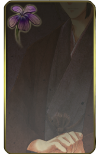

入口
物語
人物
概要
遊ぶ
メインキャラクター
主人公
淑女に憧れを抱く華族の娘16歳。幼少期はお転婆だった。少し恥ずかしがり屋。
イメージ花：ミルトニア（花言葉：淑女の物思い・家庭的な愛・愛の訪れ）

黒田 将貴（まさたか）
かつては名門だったが父の代で没落した華族。
黒田は自然を愛する優秀な努力家学生で、黒田父(故人)は主人公父の恩人であった関係から文通相手として見込まれる。
イメージ花：スミレ（花言葉：小さな幸せ・誠実・無邪気な恋・謙虚）
サブキャラクター
磯野
主人公家に長年勤める家令。
文矢
主人公兄。既婚で海外に住み、手紙で主人公にアドバイスをくれる。
四条 華織
主人公兄の友人華族。